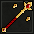
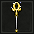
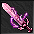
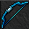

Bem-Vindo ao Eternal Shop! Troque suas eternallcoins aqui.
| Premium Account | ||
| Dias | Descrição | Selecione quantos dias |
| 30 | 30 dias de PREMIUM Account (10 eternallcoins) 1 mês de Premium Account! |
Precisa estar logado |
| 60 | 60 dias de PREMIUM Account (19 eternallcoins) 2 meses de Premium Account! |
Precisa estar logado |
| 90 | 90 dias de PREMIUM Account (28 eternallcoins) 3 meses de Premium Account! |
Precisa estar logado |
| 2 | 2 dias de PREMIUM Account (1 eternalcoin) Quer sentir o gostinho em ser um Premium Account? Gaste apenas 1 point e tenha dois dias inteiros com as vantagens VIP! |
Precisa estar logado |
| Pacotes Especiais | ||
| Img | Descrição | Selecione o pacote de Auras |
| Pacote Sorcerer Full Aura (50 eternallcoins) Pacote com todas as auras de sorcerer! Estão inclusos neste pacote: Aura Wand, Lâmina de Gelo, Dobrão de Fogo e Vento Cortante. Economia de 14%! Vocation: sorcerers |
Precisa estar logado | |
| Pacote Druid Full Aura (58 eternallcoins) Pacote com todas as auras de Druid! Estão inclusos neste pacote: Aura Rod, Fúria da Natureza, Domínio da Terra, Chamada do Outono e Vento Cortante. Economia de 15%! Vocation: druids |
Precisa estar logado | |
| Pacote Paladin Full Aura (60 eternallcoins) Pacote com todas as auras de paladin! Estão inclusos neste pacote: Aura Bow, Sons Ocultos, Odama Rasenshuriken, Dança dos Ossos e Vento Cortante. Economia de 15%! Vocation: paladins |
Precisa estar logado | |
| Pacote Knight Full Aura (52 eternallcoins) Pacote com todas as auras de knight! Estão inclusos neste pacote: Aura Arms, Explosão de Meteoros, Tremor Fortificado e Vento Cortante. Economia de 15%! Vocation: knights |
Precisa estar logado | |
| Auras | ||
| Img | Descrição | Selecione a Aura |
| Lâmina de Gelo (15 eternallcoins) Com esta técnica, um Supreme Sorcerer consegue desferir um Ice Thunder (housenka) modificado fisicamente, mais rápido e com alcance maior. Vocation: sorcerers |
Precisa estar logado | |
| Dobrão de Fogo (15 eternallcoins) Com esta técnica, um Supreme Sorcerer consegue amplificar o poder da sua Ultimate Explosion (exevo gran mas vis) mudando sua aparência e força. Vocation: sorcerers |
Precisa estar logado | |
|  | Aura Wand (10 eternallcoins) Com esta técnica, um Supreme Sorcerer ganha a habilidade de conjurar (criar) a poderosa Aura Wand citando as palavras mágicas exevo aura wand, então o Supreme Sorcerer pode criar outra sem precisar adquirir novamente a Special Skill no Mytherium Shop. Vocation: sorcerers |
Precisa estar logado |
| Fúria da Natureza (15 eternallcoins) Com esta técnica, um Majestic Druid consegue amplificar o poder da sua Poison Storm (exevo gran mas pox) mudando sua aparência e força. Vocation: druids |
Precisa estar logado | |
| Domínio da Terra (10 eternallcoins) Com esta técnica, um Majestic Druid consegue alcançar uma distância maior quando usando o Hyakka Ryouran. Vocation: druids |
Precisa estar logado | |
| Chamada do Outono (15 eternallcoins) Com esta técnica, um Majestic Druid consegue criar uma pequena floresta de galhos secos na sua frente citando as palavras mágicas exevo grav mas, obstruindo a passagem de seus inimigos ou até mesmo os aprisionando. Vocation: druids |
Precisa estar logado | |
|  | Aura Rod (10 eternallcoins) Com esta técnica, um Majestic Druid ganha a habilidade de conjurar (criar) a poderosa Aura Rod citando as palavras mágicas exevo aura rod, então o majestic druid pode criar outra sem precisar adquirir novamente a Special Skill no Mytherium Shop. Vocation: druids |
Precisa estar logado |
| Explosão de Meteoros (15 eternallcoins) Com esta técnica, um Monster Knight consegue amplificar o poder do seu Uber Exori mudando sua aparência, tamanho e força. Vocation: knights |
Precisa estar logado | |
| Tremor Fortificado (15 eternallcoins) Com esta técnica, um Monster Knight consegue atingir uma área bem maior com seu Ezzori. Vocation: knights |
Precisa estar logado | |
|  | Aura Arms (13 eternallcoins) Com esta técnica, um Monster Knight ganha a habilidade de conjurar (criar) as poderosas armas Aura Axe, Aura Sword e Aura Club citando as palavras mágicas exevo aura axe, exevo aura sword e exevo aura club, respectivamente, então o monster knight pode criar outra sem precisar adquirir novamente a aura no Eternal Shop. O knight também pode encantar sua Aura Weapon com o NPC Archeos em Versia. Vocation: knights |
Precisa estar logado |
| Sons Ocultos (15 eternallcoins) Com esta técnica, um Lord Paladin consegue amplificar o poder do seu Exori Song mudando sua aparência, tamanho e força. Vocation: paladins |
Precisa estar logado | |
| Odama Rasenshuriken (10 eternallcoins) Com esta técnica, um Lord Paladin consegue desferir um Rasenshuriken com força de tornados, alcançando distâncias maiores. Vocation: paladins |
Precisa estar logado | |
| Dança dos Ossos (15 eternallcoins) Com esta técnica, um Lord Paladin consegue criar uma cerca de ossos em sua volta por um curto intervalo de tempo, citando as palavras mágicas karamatsu no mai, se prendendo junto ao inimigo sem que ele possa usar destroy field runes. Vocation: paladins |
Precisa estar logado | |
|  | Aura Bow (13 eternallcoins) Com esta técnica, um Lord Paladin ganha a habilidade de conjurar (criar) a poderosa Aura Bow (bow que cria flechas mágicas) citando as palavras mágicas exevo aura bow, então o lord paladin pode criar outra sem precisar adquirir novamente a Special Skill no no Mytherium Shop. Vocation: paladins |
Precisa estar logado |
| Vento Cortante (18 eternallcoins) Com esta técnica, o aventureiro de vocação superior tem o poder do seu Haste (utani hur) e Strong Haste (utani gran hur) amplificado, além de criar um efeito em sua frente cada vez que cita a magia. Vocation: all vocs |
Precisa estar logado | |
| Change Corpse (20 eternallcoins) Com esta técnica, o jogador cita as palavras mágicas change corpse, e com o custo de 50% do total de sua mana, o jogador troca de posição com seu alvo após 2 segundos. Vocation: all vocs |
Precisa estar logado | |
| Anti Exiva (1 eternallcoins) Citando as palavras mágicas exana exiva, o jogador fica camuflado e ninguém pode usar a spell Find Person (Exiva) contra ele durante três minutos. (limite de 3 cargas) Vocation: all vocs |
Precisa estar logado | |